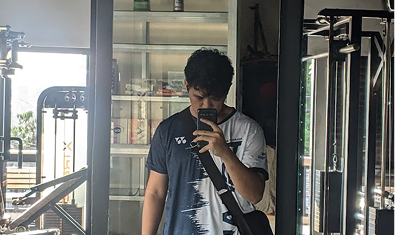
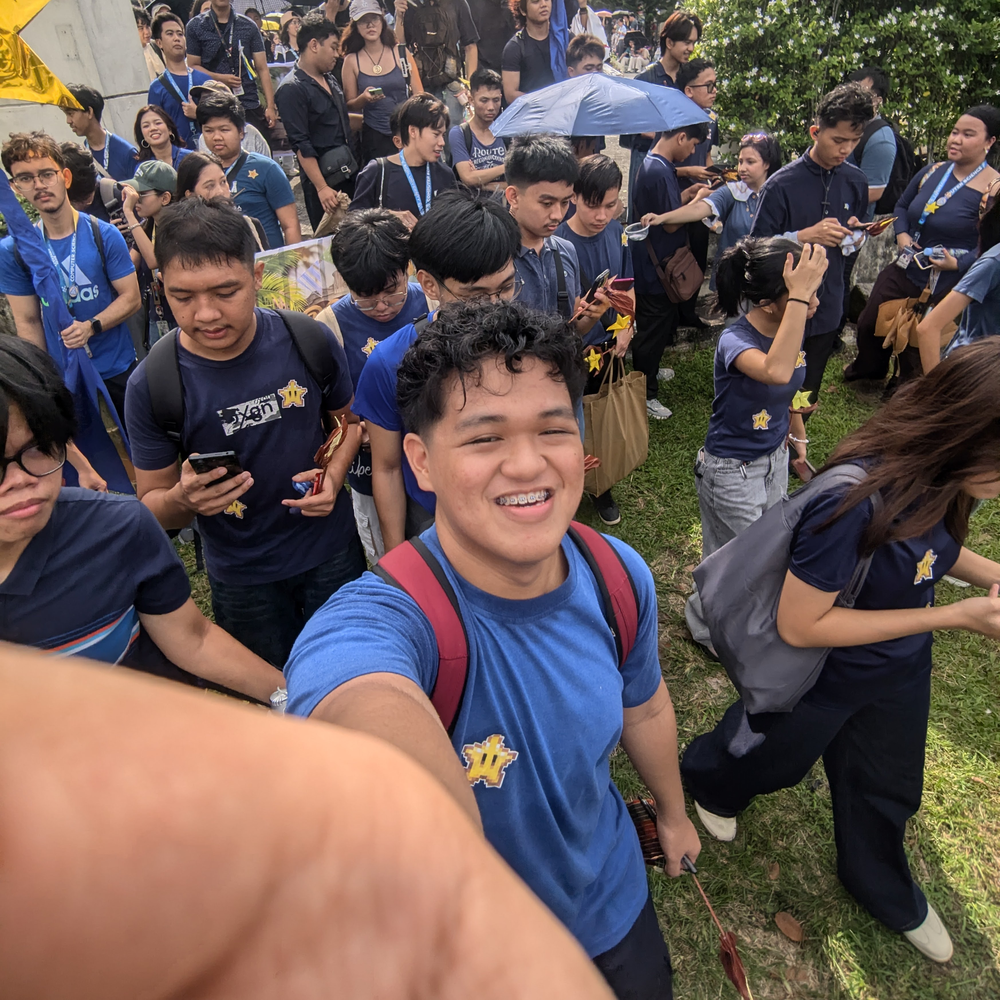
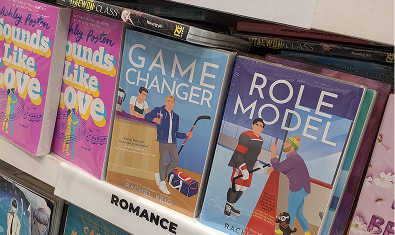
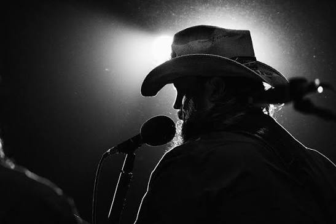
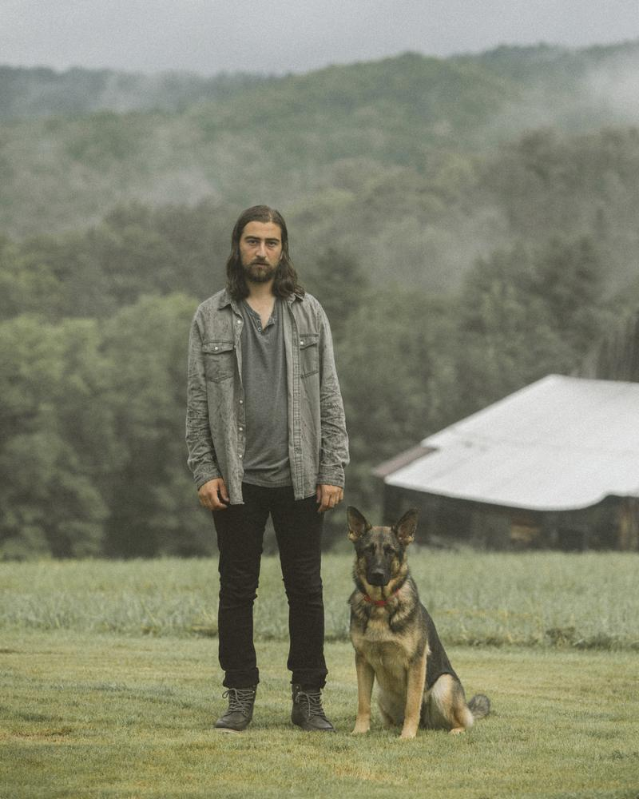
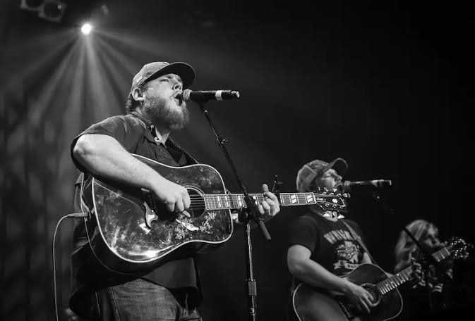
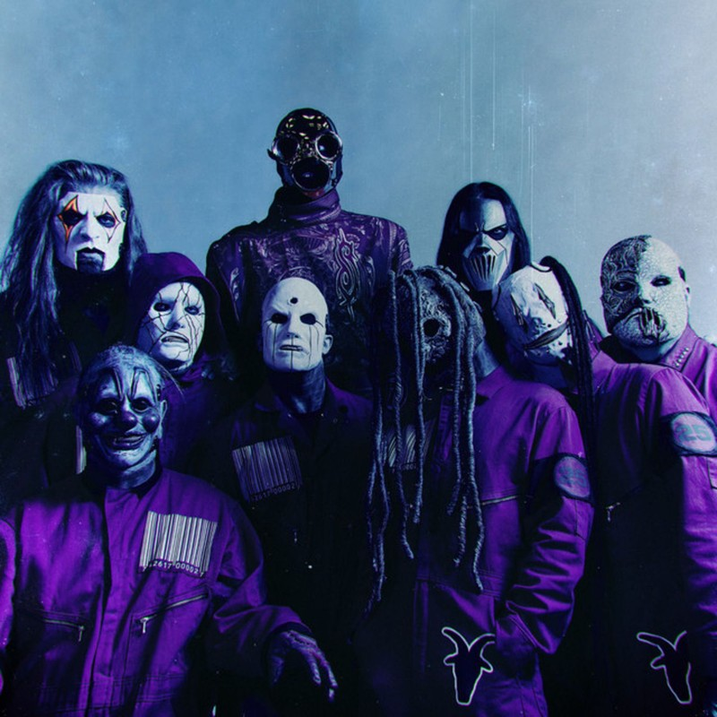

Going to the Gym
I'm not yet consistent but I like to show up whenever I can.
I am a first-year BSCS student at Bicol University. I'm a newbie with coding/programming. That's also why I'm excited and curious about meeting amazing people and learning from them.
Get to Know me
A little curiosity. A little fresh air.
FIELD NOTES / 01
Photo credit: Mark Consulta
A quiet essay space for notes on curiosity, learning, and the small moments that make computing feel meaningful.
As a child, I was always surrounded by improvised circuitry, and many projects from my father. He would make a huge DIY vertical windmill turbine made out of aluminum in the middle of the night and put it up over the roof out of passion. Most importantly, he’s very into computers too. He would modify a computer’s chassis, swap out hard drives and RAM sticks, and install operating systems. I was basically surrounded with technology my whole life.
And growing up, I got curious. I would start troubleshooting a system unit when it stopped working without asking for my father’s help. I also started to tweak some settings because I wanted to push what a computer could do with our home PCs. And yeah—I may have broken some components and I got scolded for it. But when it did work, it was such a good feeling. I felt like I could do anything.
One of which is Android customization. There was a time when I wanted to customize my Android phone but it wasn't possible due to restrictions. And that’s when I discovered rooting. It was essentially gaining read and write access to the root level of an Android phone without restrictions. And with the knowledge I gained from that, I achieved replacing my Android phone’s OS with another called “LineageOS” (also known as a “Custom ROM”). I'm glad I did that because the new OS made my phone much more snappy and more efficient.
And recently, I tried out “The Odin Project.” It’s an open-source full-stack web development curriculum. I learned many things by making websites. It was great because I also have a passion for art. I get to practice my knowledge for designs by making websites. In the same curriculum, it was required to use a Linux environment, and that’s when I tried out Linux. Once I got into it, I couldn’t look back to using Windows. It was much more snappy, efficient, and a lot more secure.
With that, I decided to study Computer Science to further deepen my knowledge in technology. One of which is incorporating complex mathematical computations into a program that may be of use to people, solve real-world problems, and make people's lives easier. Besides that, I hope to meet and work with amazing people along this path I’ve chosen.
Things that make me, me. When I'm not in class, you'll probably find me doing one of these.

I'm not yet consistent but I like to show up whenever I can.

I love reading some romance books and getting myself giggling with the good parts in a book.
I like to play the guitar and sing the songs that I love listening to.
Not a perfect plan, just a few intentions to grow toward, one small step at a time.
Progress over perfection.
I want to wake up early in the morning and work out more consistently.
I would love to learn some more full-stack web development with “The Odin Project.”
I'd love to live at a place where the four seasons happen.
A little structure leaves more room for the things I love.
1st Semester
2026-2027
| Time | Monday | Tuesday | Wednesday | Thursday | Friday | Saturday |
|---|---|---|---|---|---|---|
|
Morning 7:00am–12:00pm |
No class Free morning |
No class Free morning |
CS 101 - Introduction to Computing 9:00am–12:00pm • CS-04-211 |
No class Free morning |
GEC11 - Understanding the Self 9:00am–12:00pm • CSSP-MH-3 |
NSTP 11 - CWTS 7:00–10:00am |
|
Afternoon 1:00–4:00pm |
No class Free afternoon |
Phys 1 - Physics for Computing 1:00–2:30pm • CS-04-101 Math 101 - Mathematical Analysis 2:30–4:00pm • CS-04-109 |
No class Free afternoon |
Phys 1 - Physics for Computing 1:00–2:30pm • CS-04-101 Math 101 - Mathematical Analysis 2:30–4:00pm • CS-04-109 |
Math 101 - Mathematical Analysis 1:00–3:00pm • CS-04-109 |
No class Free afternoon |
|
Evening 4:00–7:00pm |
CS 102 - Computer Programming 1 4:00–7:00pm • CS-02-202 |
No class Free evening |
CS 102 - Computer Programming 1 4:00–7:00pm • CS-02-202 |
No class Free evening |
No class Free evening |
PATHFIT 4:00–6:00pm • IPESR |
A place where people with the same interests meet.
Background image: screenshot of reddit.com
(Pop, Rap, Country, Folk)

(Country, R&B)

(Folk)

(Country)
(Country)

(Heavy Metal)
What I've learned while building this project
Creating this page helped me realize how much I've grown, both as a student and as someone exploring web development. I learned that building a website is more than just writing code. It also involves creativity, planning, and making thoughtful design decisions to communicate information effectively.
Compared to my previous About Me activity, I became more comfortable working with HTML and CSS. I improved how I organize content using semantic HTML, structure layouts, and apply CSS to achieve a more consistent design. I also learned to pay closer attention to details such as spacing, typography, colors, and responsiveness.
Most importantly, this project reminded me that there's always something new to learn. I'm still far from where I want to be, but I'm happy with the progress I've made and excited to keep improving.